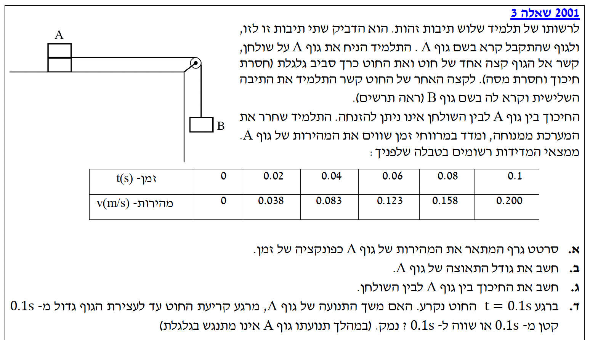
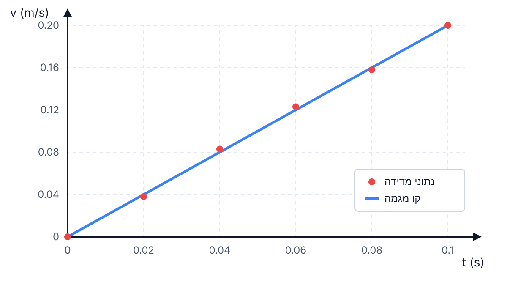
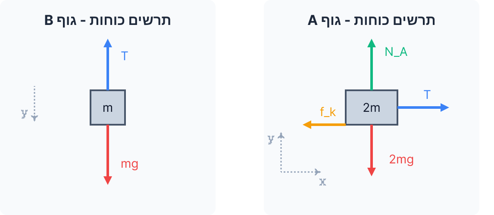

פתרון מודרך צעד-אחר-צעד

שלום תלמידים יקרים! 👋
לפנינו שאלה קלאסית המשלבת הבנה של קינמטיקה מתוך גרף (או טבלה) יחד עם חוקי ניוטון (דינמיקה). המערכת מתחילה ממנוחה, ואנו מקבלים נתונים על המהירות של גוף A בפרקי זמן שווים. ננתח את התנועה צעד אחר צעד, נקפיד על יחידות מידה תקניות ונצייר תרשימי כוחות מסודרים לכל גוף בנפרד.
ברשותנו טבלת נתונים של זמן \( t(s) \) ומהירות \( v(m/s) \) עבור גוף A. היחידות כבר נמצאות במערכת תקנית (MKS) - מטרים ושניות, ולכן אין צורך בהמרת יחידות (שלב 0 תקין).
אנו נדרשים לסרטט גרף המתאר את מהירות גוף A כפונקציה של הזמן, כלומר \( v(t) \).
לסרטוט הגרף אנו נשענים על הנתונים המספריים, אך מתוך התבוננות בקצב עליית המהירות אנו יכולים לזהות קשר לינארי שמתאים לנוסחת הקינמטיקה לתנועה שוות תאוצה:
נסמן את הנקודות מהטבלה במערכת צירים: ציר אופקי (X) ייצג את הזמן \( t \) בשניות, וציר אנכי (Y) ייצג את המהירות \( v \) במטרים לשנייה. לאחר סימון הנקודות, נעביר "קו מגמה" (Line of best fit) העובר דרכן בצורה המיטבית.

אנו מסתמכים על הגרף שסרטטנו. תנועת הגוף התחילה ממנוחה ולכן במהירות ההתחלתית \( v_0 = 0 \). ברגע \( t = 0.1\text{ s} \) המהירות היא \( v = 0.200\text{ m/s} \).
אנו נדרשים לחשב את גודל התאוצה \( a \) של גוף A.
כאשר התאוצה קבועה, היא שווה לתאוצה הממוצעת המוגדרת כשינוי במהירות חלקי פרק הזמן בו התרחש השינוי (או פשוט שיפוע הגרף):
לחלופין, ניתן להשתמש בנוסחת המהירות:
נבחר את הנקודה הראשונה והנקודה האחרונה מהטבלה, אשר מונחות במדויק על קו המגמה. נציב את הערכים בנוסחת השיפוע:
כעת אנו נכנסים לדינמיקה (כוחות). נגדיר את מסתה של תיבה אחת כ-\( m \). לכן:
מסת גוף A (שתי תיבות): \( m_A = 2m \)
מסת גוף B (תיבה אחת): \( m_B = m \)
תאוצת המערכת שחישבנו: \( a = 2\text{ m/s}^2 \)
תאוצת הכובד: \( g = 10\text{ m/s}^2 \)
החוט חסר מסה והגלגלת חסרת חיכוך, ולכן המתיחות \( T \) שווה לאורך כל החוט. הגופים נעים יחד ולכן גודל תאוצתם זהה.
אנו נדרשים לחשב את מקדם החיכוך הקינטי \( \mu_k \) בין גוף A לבין השולחן.
נשתמש בחוק השני של ניוטון ובנוסחת כוח החיכוך הקינטי:
תחילה, נסרטט תרשים כוחות (FBD) עבור כל גוף בנפרד, ונגדיר מערכת צירים לכל גוף (כיוון התנועה ייקבע ככיוון החיובי כדי להבטיח ש-\( a \) חיובי לשניהם):

נרשום את משוואות החוק השני של ניוטון לכל גוף.
עבור גוף A:
בציר y (אין תנועה, תאוצה אפס):
נציב בנוסחת כוח החיכוך: \( f_k = \mu_k N_A = \mu_k (2mg) \).
בציר x (כיוון חיובי ימינה):
עבור גוף B:
בציר y (כיוון חיובי מטה, עם התנועה):
כעת, נחבר את מערכת המשוואות. נציב את הביטוי למתיחות \( T \) ממשוואה 2 לתוך משוואה 1 (הכוח הפנימי מתבטל):
המסה \( m \) מופיעה בכל האיברים ולכן ניתן לצמצם אותה (מותר כי \( m \neq 0 \)):
נציב את הנתונים המספריים: \( g = 10 \), \( a = 2 \):
ברגע \( t = 0.1\text{ s} \) החוט נקרע.
המהירות ההתחלתית לשלב זה (המהירות ברגע הקריעה) היא: \( v_0' = 0.200\text{ m/s} \).
אין יותר כוח מתיחות (\( T = 0 \)), הכוח האופקי היחיד הפועל על גוף A הוא כוח החיכוך הקינטי \( f_k = \mu_k \cdot 2mg \) המכוון שמאלה.
עלינו לקבוע האם משך הזמן מרגע קריעת החוט ועד לעצירת הגוף (נסמן כ-\( \Delta t' \)) גדול מ-, קטן מ- או שווה ל-\( 0.1\text{ s} \). ולנמק את תשובתנו.
נמצא את התאוצה החדשה של גוף A (נסמנה ב- \( a' \)). נגדיר את כיוון המהירות (ימינה) ככיוון החיובי. משוואת הכוחות בציר האופקי תהיה:
נצמצם את \( 2m \):
נציב נתונים:
קיבלנו שתאוצת הגוף היא \( -2\text{ m/s}^2 \). המשמעות היא שכיוון התאוצה מנוגד לכיוון המהירות, ולכן גודל המהירות קטן עד לעצירה.
כעת, נחשב את הזמן הנדרש לעצירה. המהירות הסופית היא \( v = 0 \):